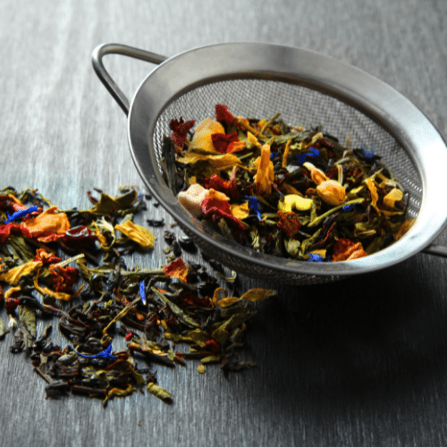
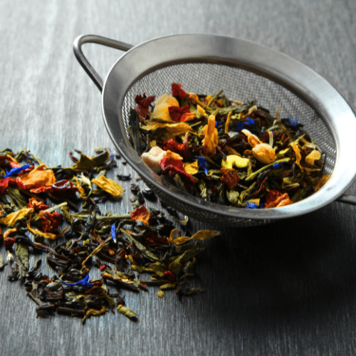
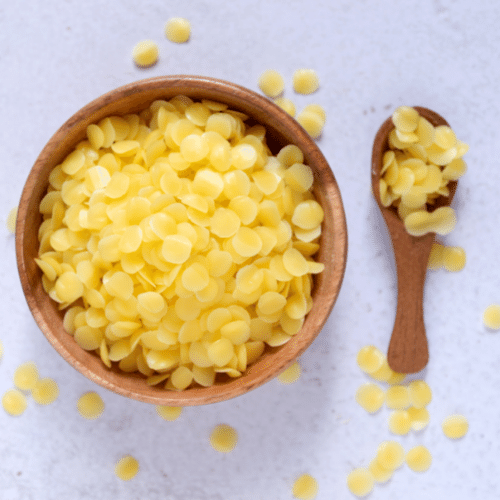
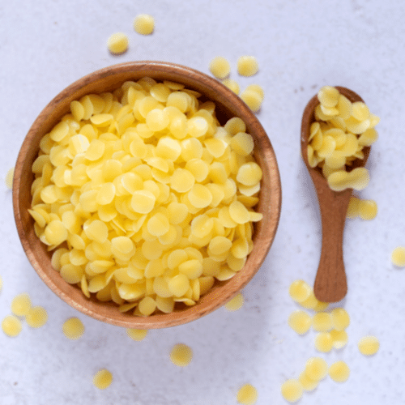
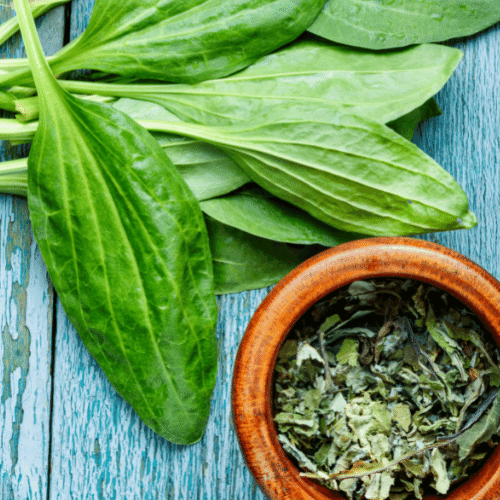
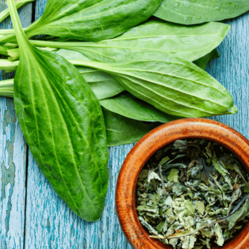
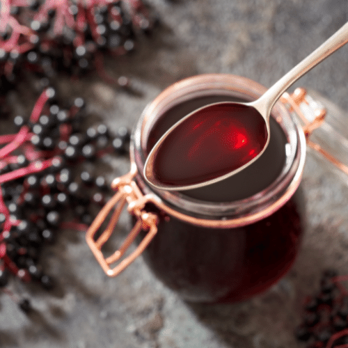
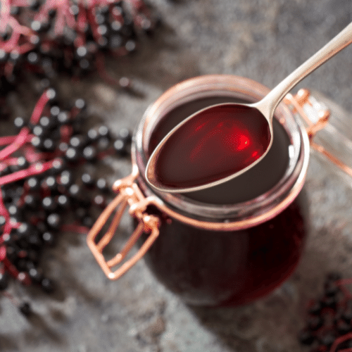

Herb Uses
There are many ways to take a plant and fix it so that it works for you. You can make it into a tincture, a syrup, an infusion (tea), or decoctions. A salve or a poultice might be what you need or even an oil infusion. You can even crush the herbs down to a powder and place them in capsules. Some of them you can cook with or just eat raw. The only problem is deciding what form you need the herb to be in and how soon you need it. Some avenues take longer than others. The key is to be prepared and have them on hand so that the medicine is ready when you need it.
Tincture:
There are three types of tinctures. Alcohol, vinegar, and glycerin. Each of these is called a menstrum. A menstrum is a liquid used to extract the properties of the plant into the liquid. With an alcohol menstrum, you can extract the most out of the plants. It has the longest shelf life and is absorbed quicker so that you can get the medicine to your systems faster. If you are opposed to alcohol as a base, there are other forms that can be used. Vinegar is the next best thing. Raw apple cider vinegar is the one I prefer to use but others have used white vinegar as well. Vinegar has a shelf life of 3-4 years in a cool dark place. Glycerin is another menstrum that can be used and it has a shelf life of 2 years. A glycerin based syrup keep for 3-6 weeks when refrigerated. Glycerin is sweet and so it makes a good base for kids’ medicine and is a great alternative for alcoholics.
To make a simple tincture involves just letting the dried herbs sit in a glass jar in the desired menstrum for 6 weeks and soak. Make sure that your herbs are fully dried and chopped into small pieces. Some recipes are slightly different and involve some cooking, but a simple tincture just needs a good soak. Shake it daily to mix up the herbs and after the soaking process, just strain and label. Keep it in a cool dark place.
One of my favorite tinctures to make is a super garlic tincture. It involves a little bit more than just soaking, and takes a bit of time, but is so worth the effort. It is an immune booster like no other. I have used it to fight the cold, flu, bronchitis, pneumonia, sinus infections and just to keep my immune system highly functioning. If you would like to see the step-by-step process, check it out here.

Infusions/Decoctions:
Infusions and decoctions are when you use hot water as your menstrum to extract the properties of the herb. You would infuse the more delicate parts of the plant, for instance the flower and leaves, and decoctions are done with the stronger parts of the plant such as the bark or root. Infusions are most common use of herbs. Most people know and understand how to make a cup of tea. All you need to do is boil some water and add in the herbs to soak for 5 min and then strain the herbs out. After you strain the herbs, you can drink it hot or cold. Teas are great for quick medicine but compared to a tincture, you would need to drink a lot of tea to get the same amount of medicinal properties that you would get from just a tablespoon or two of tincture. Infusions also have only about a week shelf life when stored in the fridge so they do not last as long as a tincture. Now a decoction is when you start off by soaking herb and then bringing them to a boil. You will need to low boil them for 15 min. Then you strain and drink just like an infusion. To extract the medicinal properties of roots and barks you will need to use the decoction method. Decoctions are used in making syrups (see below) like cough and cold syrups. Sweeten either with honey or stevia, which is another great herb!
 

Herbal Oils:
Herbal oils are not only amazing for salads and savory dinners, but they are also essential in healing our bodies. To make an herbal oil is just as simple as a tea or a simple tincture. Choose your favorite natural oil such as olive oil, extra virgin coconut oil, avocado oil, or any seed oil like grapeseed oil. Take your herb, dried and chopped fine, and place it in a wide mouth jar, no need to tightly pack it. Cover the herbs with 2 inches of the oil you chose and put it in a sunny window. Shake it vigorously every day. Depending on how hot it is outside, your oil could be done in a week, but if it is the chilly season, it might take a month. A quicker way is to use a double boiler or a low heat crockpot. You want to get the oil to about 80 – 100 degrees. Remember that heat extracts the medicinal properties. You can double boil it for about 30-45 min or crockpot it for 2-4 hours. When finished, strain the oil through a cheese cloth, label your jar and store in a cool dark place. Herbal oils are used for massages on joint pain or just to relax, ear oils for earaches, baby oils, bug repellants and all kinds of skin disorders. Herbal oils are the base for your homemade salves, ointments, and balms as well.


Salves:
Salves are what you would want to make to apply herbs to the skin. They are useful for burns, rashes, arthritis, eczema, sore muscles, bites, and wounds such as shingles. Salves are easy to make. Just take a cup of your favorite herb oil and warm it with a ¼ cup of bees wax. Add some vitamin E oil to help with rancidity. A little essential oil will also work wonders in your salves. When the wax and oil have melted well together, dip your spoon in the mixture and stick the spoon in the fridge for 5 min. If it is too hard you need to add more oil. If it is too runny, add more bees wax. You want it a soft form but not hard. Be creative and come up with a blend that tickles your senses.
 

Poultice:
A poultice is used in first aid when treatment is needed on the spot. Poultices can not be stored because they are made from fresh plants or rehydrated dried herbs. Poulitces are used in the treatment of stings, bites, wounds, chest congestion, or even achy joints. To make a poultice all you need to do is collect some fresh herbs and grind them up. Fresh herbs are best because the properties are the most potent for a poultice at this time. A mortar and pestle is typically used to crush them up but there are a number of ways that the crushing can be accomplished. If you choose to chew the herb to crush it, make sure that it is a safe herb to chew. Once the herb is crushed and the juices from the plant have formed it into a paste like substance, place on infected area and secure with a wrap. The poultice needs to be kept moist, so it will need to be changed frequently. If using dried herbs for a poultice, you need to soak them first in either hot or cold water which will reactivate the properties in the plant. Hot poultices aid in circulation and allow the medicinal properties to reach the cells more quickly. Cold poultices are for the aid in reducing swelling and circulation.
 

Syrups:
A simple syrup is just that, simple. Syrups are used for giving medicine to kids and others who may have a harder time swallowing their medicine. You know the famous saying, "A spoonful of sugar helps the medicine go down." All you need to do to make a syrup is to choose the decoction of your choice and add honey. A sweet syrup is a 1:1 ratio and will store longer, up to 6 months in the fridge. If you reduce the honey to a 1:2 ratio, it won't store as long but will still work. Adding tincture to the syrup will improve it's shelf life due to the alcohol in the tincutre. Glycerine can also be used to extend the shelf life of a syrup.
 
